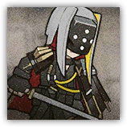

深池侦察兵 Dublinn Scout
近战 物理；普通 任意
|
 |
前线侦查与骚扰单位。深池部队中的侦察人员。有着高超的隐匿行踪的技巧，为深池部队的神出鬼没提供了保障。佩戴着暗影术师制造的折射面罩，对一般的源石技艺有较强的抵抗能力。 |
深池侦察兵丨Dublinn Scout
中型类人（任意），守序中立
| AC 12 | 先攻 +3（13） |
| HP 32（5d8+10） | |
| 速度 35尺 | |
| 调整 | 豁免 | 调整 | 豁免 | 调整 | 豁免 | |||||||||
|---|---|---|---|---|---|---|---|---|---|---|---|---|---|---|
| 力量 | 11 | +0 | +0 | 敏捷 | 16 | +3 | +3 | 体质 | 14 | +2 | +2 | |||
| 智力 | 10 | +0 | +0 | 感知 | 13 | +1 | +1 | 魅力 | 10 | +0 | +0 |
| 技能 察觉+3，隐匿+5 |
| 感官 黑暗视觉60尺，被动察觉13 |
| 语言 通用语，维多利亚语，塔拉语 |
| CR 1（XP 200；PB +2） |
特质 Traits
折射抗性 Refraction Resistance。深池侦察兵为抵抗法术或魔法效应而作的豁免具有优势。陷入沉默状态时此特性失效。
集群战术 Pack Tactics。若深池侦察兵的攻击目标生物周围5尺范围内存在有至少一个未失能的盟友，则深池侦察兵对该生物进行的攻击检定具有优势。
动作 Actions
长刀 Longsword。近战攻击检定：+5，触及5尺。命中：8（1d10+3）挥砍伤害。
深池侦察队长 Dublinn Scout Leader
近战 物理；普通 任意

|
前线侦查与骚扰单位。深池部队中的侦察队队长。指挥属下的侦察兵，为深池部队的神出鬼没提供了保障。佩戴着暗影术师制造的折射面罩，对一般的源石技艺有较强的抵抗能力。 |
深池侦察队长丨Dublinn Scout Leader
中型类人（任意），守序中立
| AC 13 | 先攻 +3（13） |
| HP 45（7d8+14） | |
| 速度 35尺 | |
| 调整 | 豁免 | 调整 | 豁免 | 调整 | 豁免 | |||||||||
|---|---|---|---|---|---|---|---|---|---|---|---|---|---|---|
| 力量 | 12 | +1 | +1 | 敏捷 | 17 | +3 | +3 | 体质 | 14 | +2 | +2 | |||
| 智力 | 11 | +0 | +0 | 感知 | 14 | +2 | +2 | 魅力 | 11 | +0 | +2 |
| 技能 察觉+4，隐匿+5，求生+4 |
| 感官 黑暗视觉60尺，被动察觉14 |
| 语言 通用语，维多利亚语，塔拉语 |
| CR 2（XP 405；PB+2） |
特质 Traits
折射抗性 Refraction Resistance。深池侦察兵为抵抗法术或魔法效应而作的豁免具有优势。陷入沉默状态时此特性失效。
集群战术 Pack Tactics。若深池侦察队长的攻击目标生物周围5尺范围内存在有至少一个未失能的盟友，则深池侦察队长对该生物进行的攻击检定具有优势。
动作 Actions
多重攻击 Multiattack。深池侦察兵发动两次长刀攻击。
长刀 Longsword。近战攻击检定：+5，触及5尺。命中：8（1d10+3）挥砍伤害。重击：直到深池侦察兵下回合开始前，目标下次攻击检定将具有劣势。